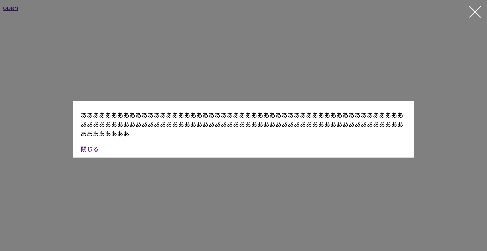
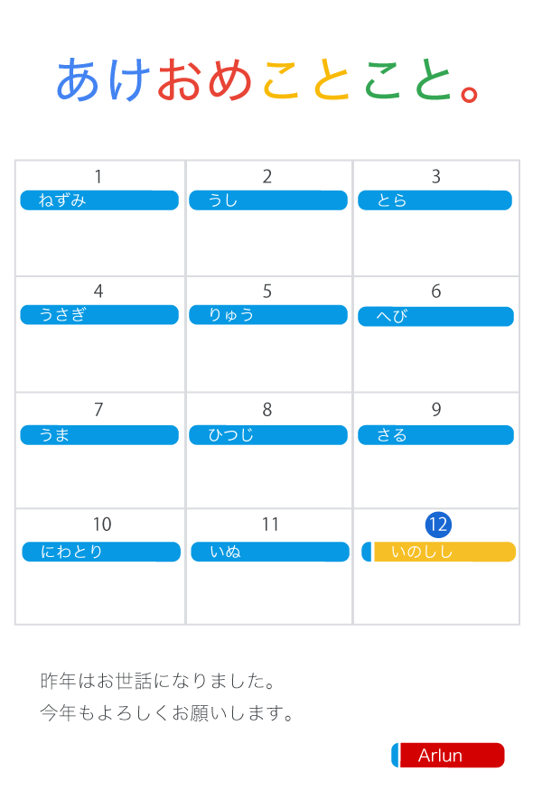
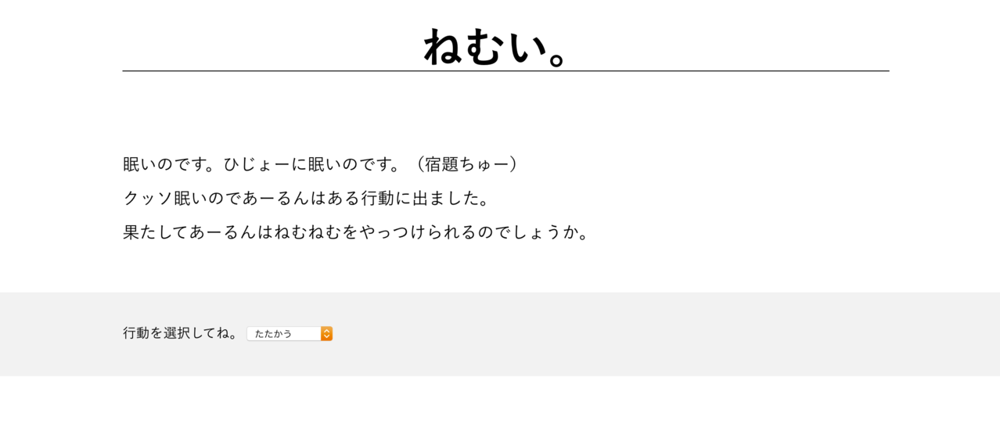
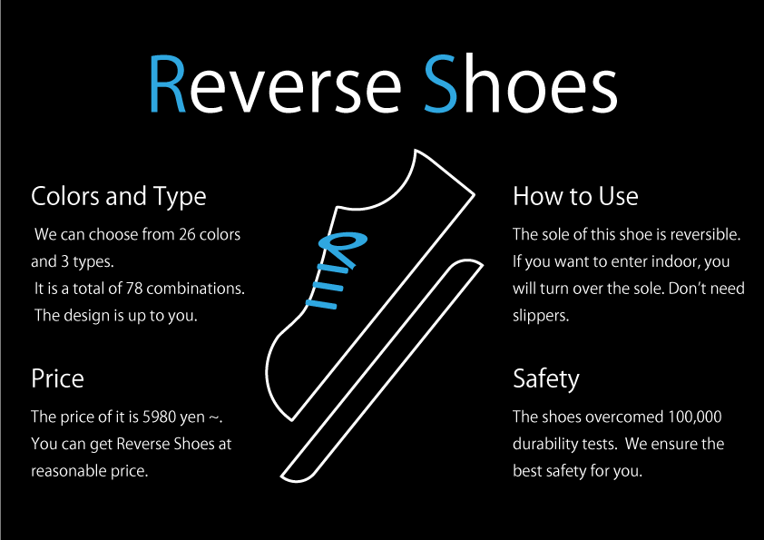
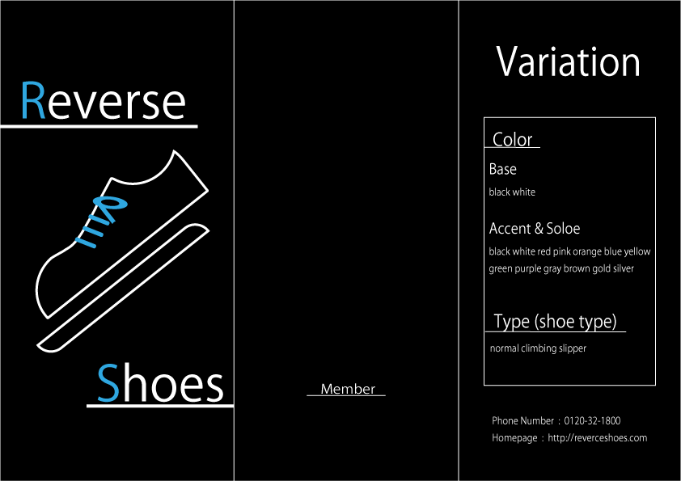
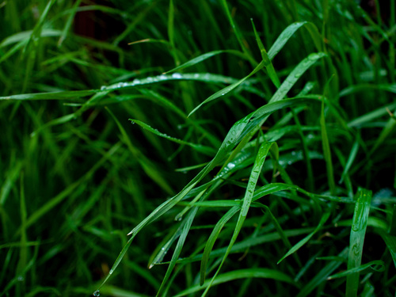
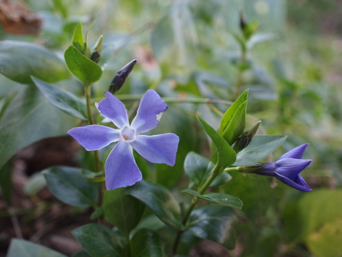
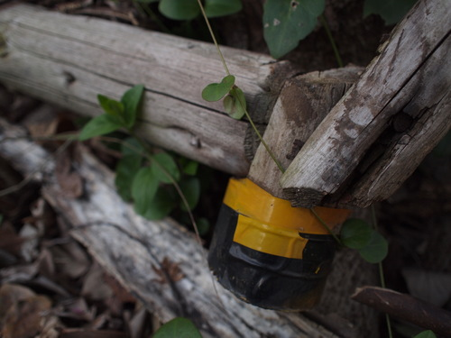
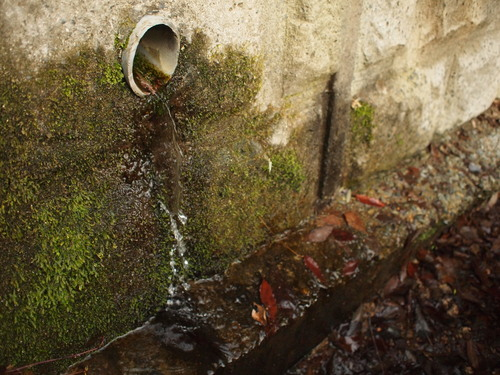
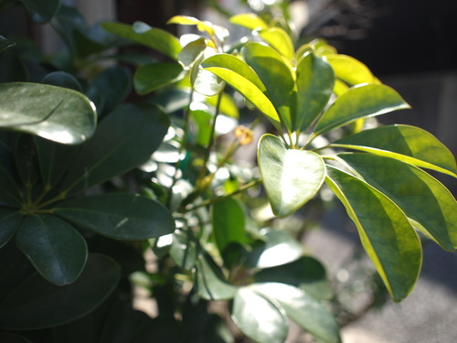

Profile
Name
Arlun
Studying Tools
Python/ HTML/ SCSS/ JavaScript/ Illustlator/ Photoshop
Want to Study/ Interesting Things
Machine Learning/ Deep Learning/ AI/ Unity/ VR/ Algorithm/ Quantum Mechanics/ Quantum Computer
Hobby/Like
Programming/ Design(UX/UI)/ Photo/ Programming Contest/ Math/ Sweet Potato Chips(in Japanese "Imo kenpi")/ To Drink Hot Water/ Music
Strong Points
Very sensitive./ Can put my back into what I like./ Is there anything...?(´・ω・｀)
Weak Points
Mental weakness(Like Tohu)./ Less physical strength./ Can't work when sleepy.
Friends
MacBook/ GALLERIA XT(Desktop)/ Mr.ten(iPhoneX)/ OLYMPUS PEN E-P2(Camera)/ iPad/ Kindle
Attribute/Qualification
First grade at senior high school/ IT passport(Japanese qualification)/ Eiken Foundation of Japan Grade Pre-2(Also Japanese qualification)
Works
Useful Parts※from here
I uploaded useful parts of website to github. Help yourself!
Now, there are a modal window and a hamburger menu.
New Year's Card
I made new year's card.
I mimiced Google ...（Am I sued? Were in trouble?）
Nemunemu※from here
I made it in 3 hours to escape from reality! It's a just joking.
Its bad point is have to install "Flask" to use.
Pamphlet
 It was used in English class. The "Reverse Shoes" is a fictional product. It was made with Illustlator.
Don't mind my poor English!
Website of my School Festival
It be making now. I'll paste a link. I do my best!
Daily
In fact, I'm taking photos lately and uploading some of them.
Will it be the record of beginner's growth?
※ Take care large size files when click a photo.
2019/3/31
Cherry blossoms in night are also beautiful. I felt I could take good photos today. But it's only becaus of beauty cherry blossoms. I only take photos of cherry blossoms lately...
2019/3/31
Cherry blossoms are always beautiful. I'm hooked on cherry blossoms. Very Japanese. I felt I could use my telephoto lens well.
2019/3/30
I went out because of rain and cherry blossoms. Drops were beautiful. It's my first time to take raw images. I want to take picture of cherry blossoms in full bloom.
2019/3/15
I went to sea. I like it very much. I can't take pictures of a sunset at the sea because of time constraints, so I want to go again and take it.
And I want to use my telephoto lens.
2019/3/9
 I couldn't take good photos. Many of my photos are dark like right one, and maybe this shows my character is also dark. But I like my character!
2019/3/5
At last, I understand f-number, shutter speed and so on. I feel amazing to changing settings.
2019/3/2
I gave it a try. I didn't know f-number, shutter speed and so on. But, it's very interesting!